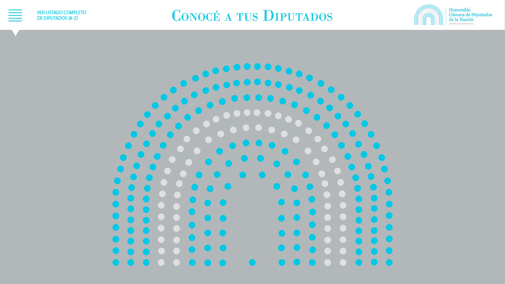
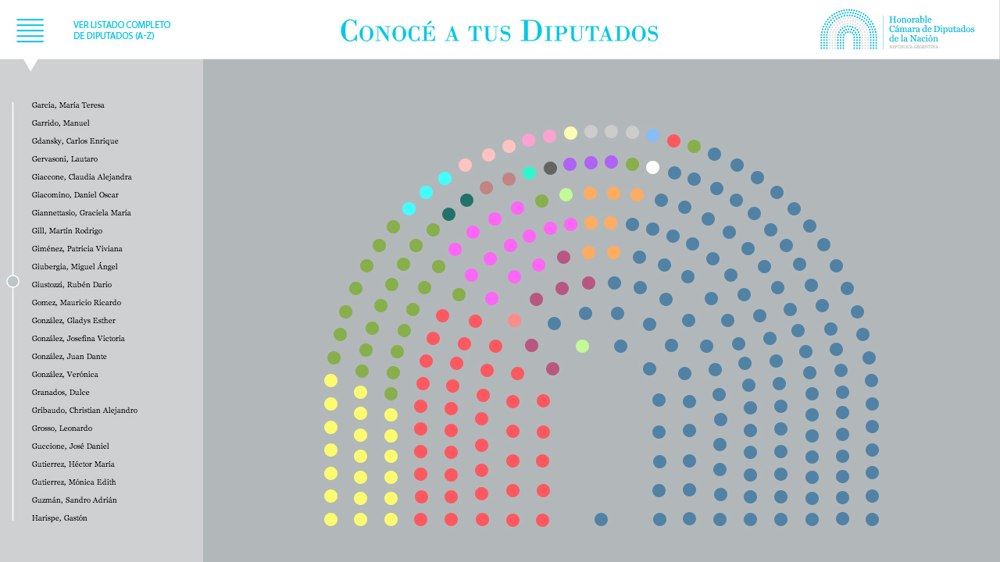
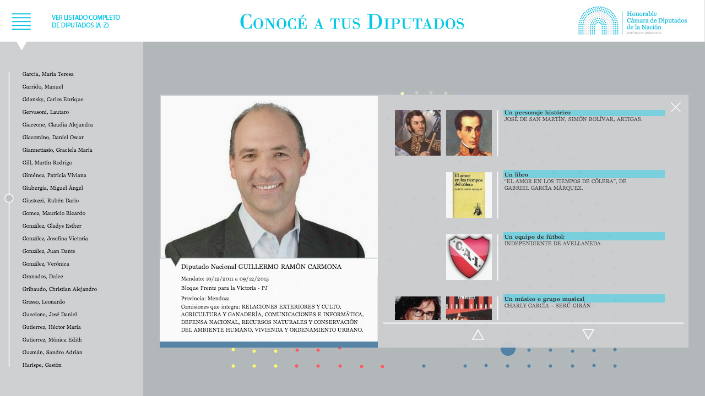
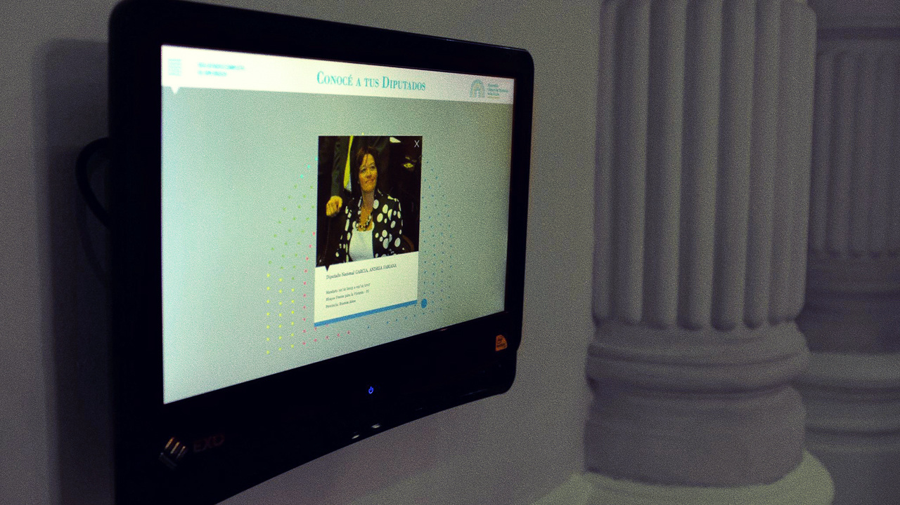

conocé a tus diputados (meet your congressmen) - 2014
desarrollo de software
aplicación interactiva encargada por la honorable cámara de diputados de la nación argentina. la aplicación es una visualización de los datos de todos los diputados, incluyendo una foto, afiliación política, e información personal. imágenes y datos provistos por la cámara de diputados.
se crearon herramientas personalizadas para generar la base de datos con la información de los diputados.
esta aplicación se encuentra en exhibición permanente en una serie de pantallas táctiles dentro del edificio del congreso, y es utilizada todas las semanas como parte de un programa de visitas guiadas.
diseño visual por paula castillo.
software development
interactive application commissioned by the national congress of argentina. the application serves as a visualization of every congressman’s data, including a photo, political party, and some personal information. data and images were provided by the congress.
custom software tools were created to create the database with all the congressmen’s information.
this piece is permanently displayed in a series of touch screens deployed in the congress building, and is used every week as part of a guided tour program.
visual design by paula castillo.
  